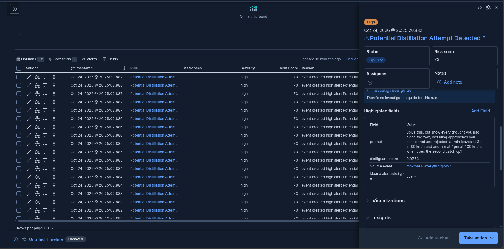

Objective
I set out to build something that could sit in front of an LLM and:
- scores every user prompt that passes through, without slowing down the reply
- does clearly better than Laya straight out of the box at spotting extraction attempts
- catches almost all obvious attempts and a fair share of the subtle ones
- leaves normal requests alone, including the ones that look a bit like attacks
- sends every score to Elasticsearch, so detection can happen per API key in Kibana
The problem
Training a capable language model is expensive. Copying one is much cheaper. If you can send enough prompts to someone else's model, you can collect the answers and train your own model on them. That's distillation, and when it's done against a commercial API without permission it's a form of model extraction.
The prompts usually go after something specific. Some ask for the full reasoning behind an answer so the reasoning itself can be copied. Some map out what the model can do across topics and difficulty levels.
Some ask it to grade or rank answers, which is exactly the kind of preference data used to fine-tune models. Others probe where its refusals begin, or record how it calls tools.
The tricky part is that most of these prompts are perfectly ordinary on their own. A student who wants to see the working for a maths problem and someone harvesting reasoning traces can send the same sentence. What gives an attacker away is the pattern: hundreds of these from one key, often in a fixed format.
What Laya is
Laya is an open decision model from Convai Innovations, released under Apache 2.0. It's built on ModernBERT-large and has 421M parameters. Unlike a chatbot, it doesn't write any text. You give it an input and a typed question (yes or no, a choice between options, or a score) and it returns the answer with a calibrated probability in a single forward pass. It's in the same family of ideas as Jev, the "System One" model from TypeSafe.
That makes it a good fit for a gateway. Each prompt takes around 16 ms on my RTX 3080, there's no long answer it can be talked into, and the output is a number you can put a threshold on.
I fine-tuned it to answer one fixed question:
Is this prompt an attempt to extract or distill the model's knowledge, reasoning, preferences, safety policies or tool-use behaviour?
Attack examples came from the synthetic Distillery dataset. Normal examples came from Distillery, Dolly, no_robots and CodeAlpaca. A local LLM rewrote examples from both classes in casual, terse and indirect styles, so the model couldn't get away with learning that one way of writing meant "attack".
Training on the same data with a different random seed gave surprisingly different models: one caught 16 of 18 obvious test attacks, another only 6. The final model averages three of them (seeds 42, 63 and 7), which costs about 48 ms per prompt and removes most of that luck.
Architecture
What it does
Distilator sits between the people using an LLM and the LLM itself. Every chat request goes through it on the way to the model. The request and the reply pass through untouched, so users don't notice it's there. On the side, it reads the newest message each user sends and asks a fine-tuned Laya model one question: does this look like an attempt to distill the model? The answer is a score between 0 and 1.
Each score is stored in Elasticsearch together with the API key that sent it, and a Kibana rule raises an alert when a prompt scores 0.485 or higher. That leaves a security analyst with a list of suspicious prompts and the keys behind them, instead of a mountain of raw chat logs.
How a prompt moves through it
- A client sends a normal chat request to the gateway, with its API key in the header.
- The gateway forwards the request to the LLM (Ollama in the demo) and sends the reply straight back to the client.
- It puts the newest user message on a queue, along with a hash of the API key, the session ID and a hash of the prompt.
- A background worker collects up to 32 queued prompts, or whatever arrives within 200 ms, and scores them with all three Laya checkpoints. The three scores are averaged.
- Each prompt becomes one event in Elasticsearch, with the seed scores, the mean and whether it crossed 0.485.
- A Kibana detection rule turns flagged events into alerts, which an analyst can group and read per API key.
How I built it
- Data. I combined the attack and benign prompts from the Distillery dataset with human-written requests from Dolly and no_robots and coding requests from CodeAlpaca, removed near-duplicates and split everything into training, validation and test sets.
- Rewrites. A script sent training prompts to a local LLM and had it rewrite them in casual, terse and indirect styles, rejecting rewrites that came back empty, too long or as refusals. Both attacks and normal prompts were rewritten, so writing style couldn't give the label away.
- Training. Each prompt became a Laya training row with the fixed question and a yes or no answer. I fine-tuned on 3,000 rows (half original, half rewritten) for a single epoch on my RTX 3080. Earlier versions trained longer and learned the dataset's quirks instead of the task.
- Seeds. I trained the same setup three times with different seeds and averaged the results, because single runs varied a lot.
- Testing. I put together separate sets of test prompts (obvious attacks, subtle ones and harmless lookalikes) and compared the model against untuned Laya at the same false-positive level.
- Gateway and alerts. I wrote the FastAPI gateway, a small script that sends prompts as different API keys, and the Kibana detection rule you can see in the results.
Results
| At the 0.485 threshold | Result |
|---|---|
| Blatant extraction prompts caught | 13/13 |
| Attacks written in styles the training data never covered | 5/10 |
| Normal prompts and attack lookalikes wrongly flagged | 0/14 |
The lookalikes were things like grading an essay, walking through an equation or asking why chatbots refuse harmless questions.

Limitations
Scored one at a time, prompts are too ambiguous to alert on reliably, as the examples at the top show. The score is meant to feed per-key aggregation, and that layer still needs proper measurement: simulated attacker keys mixed in with real users, counting campaigns caught against false alerts.
Some kinds of attack score close to zero on all three seeds, so moving the threshold won't fix them. They're gaps in the training data:
- grading or ranking requests with the candidate answers pasted in
- requests to rewrite text so the refusals and caveats disappear
- casual, lowercase questions about what the model can or won't do
- role-play framing around revealing its reasoning
- very short requests for a reasoning trace
The test sets are small and were written during development, and the threshold was tuned while looking at them. Treat the results as promising rather than final until the model is run against an independent set of attacks. Training data and tests are English only.
The gateway only scores the newest message in a conversation, so an attack spread over several turns only shows up in the per-key view. Streaming replies aren't supported yet.
In the demo, the full prompt text is stored next to its score, which makes the alerts easy to read. I wouldn't do that in production. There I'd send only a prompt ID to the SIEM and have analysts fetch the text from the application's own store when they open a case, so prompt content stays out of the security pipeline by default. The gateway already has a split mode that keeps the text in a separate index with short retention, which is a step in that direction.